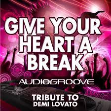
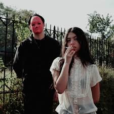

MY BEATS🎧
Song's that define my vibe
Backburner
Nikki
Genre: pop/r&b
This song it feels like I’m only remembered when it’s convenient — like a backup plan on standby, valued only when needed.

Give Your Heart a Break
audiogroove
Genre: pop/r&b
Smooth, confident, and chill — this song makes me feel cool and untouchable.

Multo
Cup of Joe
Genre: OPM
This song is like A gentle ghost of the past, dreamy and bittersweet, reminding me of what I’ve lost.

Kalapastangan
Cup of Joe
Genre: OPM
Playing this feels like letting out everything I’ve been holding in — raw, emotional, and unfiltered.

Passo bem Solto(slowed)
ATLXS
Genre: PHONK
This song hits like pure adrenaline — riding my motorcycle, I feel unstoppable and totally alive!

NO BATIDÃO (Slowed)
Teddy Abel
Genre: PHONK
Playing this feels like letting out everything I’ve been holding in — raw, emotional, and unfiltered.
.jpg)
2 Phut Hon Funk (Slowed)
KhangMxne and MGD
Genre: PHONK
Playing this feels like letting out everything I’ve been holding in — raw, emotional, and unfiltered.
Monster
Skillet
Genre: Rock
Every beat hits like a surge of power — blasting this on my ride makes me feel fierce, unstoppable, and ready to take on anything!

Hero
Skillet
Genre: Rock
This song makes me feel like I can take on the world. Every chorus hits hard and pumps me full of energy.